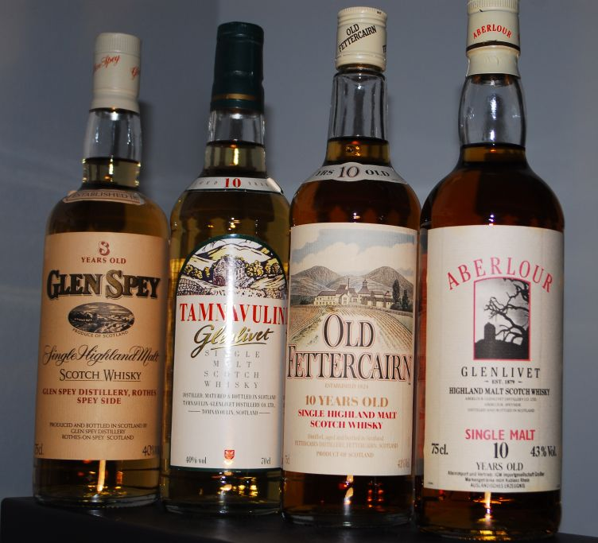
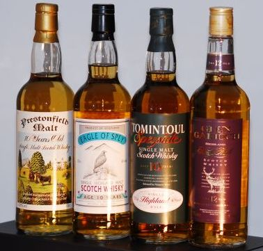

Page 1 of 1
A couple of oldies, well 70's, maybe ?

Posted:
Thu Jul 07, 2011 7:43 amby Malt-Teaser
Once again I find myself in a little Irish dilemma so what better place to come for help?
Yesterday I was invited to have a look at a whisky collection owned by a friend of a friend, yes, I know, the old friend of a friend, but in this case it's quite true.
The chap in question is German but worked for many years in the late 70's to early 80's in the UK and bought a few bottles of whisky. Most are Scotch and most of these are indeed from that period as I saw some lovely older labels.
Anyway, he has three Irish Whiskeys; Redbreast 12y, Tyrconnell and a Knappogue Castle 1993 (obviously not 70's) which says "Selected Exclusively for ...." and a signature which looks something like Mark Andrews.
Any further info on these bottles, including any possible values, would be much appreciated although I don't expect any to be earth-shatteringly expensive now.


Re: A couple of oldies, well 70's, maybe ?
Posted:
Thu Jul 07, 2011 8:14 amby DublinGus
Tyrconnell was acquired as a brand by Cooley in 1988 after being dormant since 1925, when the Old Watts Distillery (producers of The Tyrconnell) closed it's doors.
Probabally 90's 00's. I'd say bottles are easy to find, so not of any great value. €20 - €50.
The Redbrest is 90's not 100% but don't be surprised if you/he got €100 for the bottle (only small batch's relased at a time).
The knappogue is 00's would be worth €30 - €60.
Re: A couple of oldies, well 70's, maybe ?
Posted:
Thu Jul 07, 2011 11:19 amby IrishWhiskeyChaser
These all look like 1990's earliest.
And Dublin Gus has done a good job already on what i would suggest are ebay estimates.
The Tyrconnell has no great value, According to Whisky Auction €17-38 is the estimate band. There is a rarer version with 3 stars if people are even aware of it but this pops up enough times too for it not to be of huge value.
The Knappogue 1993 is getting increasingly harder to find so I would suggest an estimate of 50-80Euro (82Euro is the top money this has made in Whisky Auction)
And the Redbreast anything from 80-120.
Re: A couple of oldies, well 70's, maybe ?
Posted:
Thu Jul 07, 2011 11:48 amby Malt-Teaser
Thanks for your quick and as always, informed replies.
When I was speaking to the chap yesterday I suggested that many of his bottles had very interesting labels, but would mostly not be in the big money range, this certainly went for the Irish ones here.
Value-wise, you have confirmed what I thought about the Tyrconnell, although the other two have slightly higher values than I would have put on them.
Thanks!
He has a collection totalling 80 bottles, mostly from the late 70's into the 80's, but there are a couple of much more recent Scotches too, so this all fits. Now back to my spreadsheet .....
Keith
Re: A couple of oldies, well 70's, maybe ?
Posted:
Thu Jul 07, 2011 12:30 pmby IrishWhiskeyChaser
Forgot to mention that the Knappogue 1993 was released in 2001 and is an 8yo Single Malt from Bushmills. This was the first Knappogue release from Bushmills in the current line up.
Re: A couple of oldies, well 70's, maybe ?
Posted:
Thu Jul 07, 2011 2:25 pmby DublinGus
IrishWhiskeyChaser wrote:These all look like 1990's earliest.
And Dublin Gus has done a good job already on what i would suggest are ebay estimates.
The Tyrconnell has no great value, According to Whisky Auction €17-38 is the estimate band. There is a rarer version with 3 stars if people are even aware of it but this pops up enough times too for it not to be of huge value.
The Knappogue 1993 is getting increasingly harder to find so I would suggest an estimate of 50-80Euro (82Euro is the top money this has made in Whisky Auction)
And the Redbreast anything from 800-120.
Yes Adrian, they were only guestimates from the internet and shops. I'd say your estimates would be more on the ball.
People aren't paying the prices they paid 4 to 5 years ago. But their are still plenty of wealthy people in Ireland who if they wanted that particular bottle of redbrest in their collection would pay €800 but me alas could just about scrape up the €120

.
I know someday when I walk into a small pub in the west of Ireland I will see that same bottle of redbrest sitting on a shelf collecting dust!!

Re: A couple of oldies, well 70's, maybe ?
Posted:
Thu Jul 07, 2011 8:30 pmby IrishWhiskeyChaser
DublinGus wrote:IrishWhiskeyChaser wrote:
And the Redbreast anything from 800-120.
..... their are still plenty of wealthy people in Ireland who if they wanted that particular bottle of redbrest in their collection would pay €800 but me alas could just about scrape up the €120
.
Doohhh Typo .... now edited to 80 - 120 in original post

Also forgot to mention that the labels look very bleached from the light so that is a detraction also.
Re: A couple of oldies, well 70's, maybe ?
Posted:
Fri Jul 08, 2011 12:13 pmby Liam Murray
The Tyrconnell would be interesting because of the older art work on the label. Have a look at the newer editions and you will see what I mean. Regards from Kilkenny. If it has a bottle number on it, it may be from the frist 5000 batch which were issued in woodent presentation boxes with a certificate from J. Teeling. Double regards. Liam
Re: A couple of oldies, well 70's, maybe ?
Posted:
Fri Jul 08, 2011 9:01 pmby TheWhiskeyBro
Hi Keith,
The Knappogue is from 2001 would agree with IWC on €60-€80
The Tyrconnell 5 Star Single Malt is from 1997 - May 2004 (check the bottle for the L code printed on the glass for the year) value c. €30-€40
The Redbreast 12 is from the mid 1990s - I'd be interested in the bottle code if you can locate it, estimated value €70-€80, €100 would be a great price,
Regards Leo
Re: A couple of oldies, well 70's, maybe ?
Posted:
Sat Jul 09, 2011 3:11 amby DublinGus
TheWhiskeyBro wrote:
The Knappogue is from 2001 would agree with IWC on €60-€80
Seen the same bottle on sale in a shop in Dublin for €50, the shop would'nt be noted for good value either.
Re: A couple of oldies, well 70's, maybe ?
Posted:
Sat Jul 09, 2011 11:08 amby TheWhiskeyBro
€50 would be the close to the original retail price.
Re: A couple of oldies, well 70's, maybe ?
Posted:
Sat Jul 09, 2011 12:32 pmby IrishWhiskeyChaser
DublinGus wrote:TheWhiskeyBro wrote:
The Knappogue is from 2001 would agree with IWC on €60-€80
Seen the same bottle on sale in a shop in Dublin for €50, the shop would'nt be noted for good value either.
Old stock, snap them up now as these will only increase in value

Just was checking my notes and the 1992 retailed at 52.99 in Ally's then the price started to slowly drop down to todays constant or circa 42.99 as Knappogue started to establish the brand in Ireland. However these were availbale between 30-40Euor in Europe but by the time you added postage there's not a whole pile between them.
The 1992 go for around mim 80Euro mark and up and the 1991's are min 100Euro now and if you lucky enough to have a 1990 well they are as rare as hens teeth so I would estimate 150 and up.
1994's & 1995's are still easily available. With the 1998 and 12yo the current batch.
Re: A couple of oldies, well 70's, maybe ?
Posted:
Sat Jul 09, 2011 1:38 pmby DublinGus
IrishWhiskeyChaser wrote:DublinGus wrote:TheWhiskeyBro wrote:
The Knappogue is from 2001 would agree with IWC on €60-€80
Seen the same bottle on sale in a shop in Dublin for €50, the shop would'nt be noted for good value either.
Old stock, snap them up now as these will only increase in value
Just was checking my notes and the 1992 retailed at 52.99 in Ally's then the price started to slowly drop down to todays constant or circa 42.99 as Knappogue started to establish the brand in Ireland. However these were availbale between 30-40Euor in Europe but by the time you added postage there's not a whole pile between them.
The 1992 go for around mim 80Euro mark and up and the 1991's are min 100Euro now and if you lucky enough to have a 1990 well they are as rare as hens teeth so I would estimate 150 and up.
1994's & 1995's are still easily available. With the 1998 and 12yo the current batch.
I agree with you Adrian, have not seen many Knappogues around, I sampled the twin wood and was impressed at the price and quality, I did see a 1951 for €850 would this be normal?
ps. wow impressed with the stats from 92

Re: A couple of oldies, well 70's, maybe ?
Posted:
Thu Oct 25, 2012 2:11 pmby Malt-Teaser
My goodness, I see it's more than a year since I originally posted this.
Well, after many discussions and problems, not least of which was a separation (no, not mine but the person with the collection) I finally picked up a second selection of this old collection today, including the three Irish bottlings.
Here's exactly what I procured
- 
- Oldies-1.jpg (111.99 KiB) Viewed 1845 times
- Oldies-2.jpg (91.72 KiB) Viewed 1845 times
- Oldies-Irish.jpg (79.52 KiB) Viewed 1845 times
Any comments or opinions are welcomed
Re: A couple of oldies, well 70's, maybe ?
Posted:
Thu Oct 25, 2012 3:16 pmby IrishWhiskeyChaser
Nice little haul Keith, I hope it was a bargain basement jobbie

I'd be interested myself in the likes of the Aberlour Old Fettercairn & Tamnavulin, just to see how they compare to todays offerings. Also the Dalwhinnie which I have always had a soft spot for but have not had it in a long time.
Of the Irish the Redbreast of course would be the best, think it's from the 90's and possibly the label that was used for the re-launch of Redbreast in Ireland. Someone here should be able to give you a more concrete date as that one is fairly easy to date, probably a code on it but not sure if IDL used L codes pre 2000. The Knappogue is from 2001 and a 8yo, the official blurb on it was ...
Straw gold color. Very clean aroma and flavor-malty, with vanilla, cotton candy, honey and subtle floral notes. Light in body and somewhat creamy in texture, with a soft, slightly youthful finish. Pretty much in the charachter of most of those Knappogues to me, but you have a finer palate than me so you could tell me
The Tyrconnell is probably another early bottling of the Tyrconnell which was re-introduced by Cooley. Late 1990's early 2000's possibly. I would imagine it is only a 4-5 year old but that is all a bit vague.
Enjoy
Re: A couple of oldies, well 70's, maybe ?
Posted:
Thu Oct 25, 2012 3:44 pmby Malt-Teaser
Hi again Adrian and many thanks for your comments.
I'm not sure about bargain basement, but I was certainly very happy with the overall price I paid for 10 bottles today. The share of the price for these three together was three figures, but only just
A few weeks ago I bought something like 17 bottles from his collection, I'll see if I can find the pictures as again many were from this era.
Your idea of dates fits well with what I thought which was based on the time this chap was living in England and bought most of these bottles. In fact I've just had the Ardbeg code confirmed as bottled in 2000.
Regards,
Malty.
(Keith)
Re: A couple of oldies, well 70's, maybe ?
Posted:
Thu Oct 25, 2012 3:48 pmby Malt-Teaser
Adrian, it didn't take lomg to find the other pictures as I tend to be quite tidy and methodical
Sorry again for the size, but here is the first installment I bought ....
- Oldies01.jpg (78.32 KiB) Viewed 1838 times
- Oldies02.jpg (87.81 KiB) Viewed 1838 times
- Oldies03.jpg (90.03 KiB) Viewed 1838 times
Re: A couple of oldies, well 70's, maybe ?
Posted:
Thu Oct 25, 2012 3:50 pmby Malt-Teaser
Last two pictures (hopefully)
- Oldies04.jpg (92.66 KiB) Viewed 1837 times
- Oldies05.jpg (64.59 KiB) Viewed 1837 times
Re: A couple of oldies, well 70's, maybe ?
Posted:
Fri Oct 26, 2012 1:57 amby Pudge72
Love the label of the Redbreast, and I love the design of the old Bowmore bottle!
As I've really only been into whisky for a little less than two years, any chance to view old bottlings is a fascinating exercise for me (especially since the LCBO in Ontario does not deal in collector bottles on their store shelves).
Re: A couple of oldies, well 70's, maybe ?
Posted:
Wed Mar 06, 2013 10:15 amby Malt-Teaser
Apologies for dragging this 'oldie' up again, but here are some more oldies of similar vintage to my previous photos.
- 
- Feb-02sm2.jpg (69.61 KiB) Viewed 1612 times
- Feb-03sm2.jpg (64.98 KiB) Viewed 1612 times
- Feb-01sm.jpg (75.06 KiB) Viewed 1612 times
The Longrow has an extremely bad fill level, but is still originally closed and one I'll be opening shortly.
The Knockando pair are 1972 & 1976, The Glen grant an old 25y edition and in case you can't make it out the r/h bottle in the first picture is an old presentation of Glen Garioch.